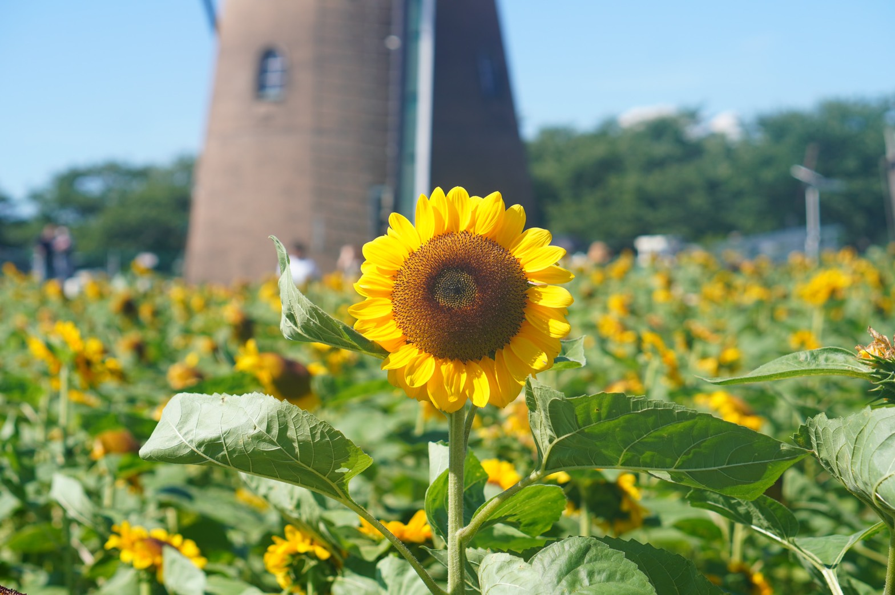
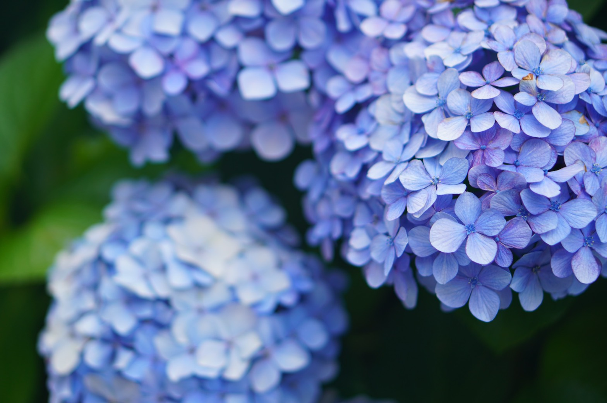

向日葵と紫陽花
向日葵

ヒマワリはキク科の一年草の植物である。
原産地は北アメリカ。高さ3mくらいまで成長し、夏から秋にかけてかなり大きな黄色の花を咲かせる。
和名は「向日葵」。太陽の動きにつれその方向を追うように花が回ると言われたことからこの名がつけられた。しかし、実際に太陽を追って動くのは成長が盛んな若い時期だけである。
花言葉は、「憧れ」「あなただけを見つめる」「あなたは素晴らしい」など。
ヒマワリの旬は7月~9月。8月下旬に日本各地で最盛期を迎えるのでこれからが見頃ですね☆
紫陽花
アジサイはアジサイ科アジサイ属の落葉低木の一種である。
原産国は、日本や中国、台湾、北アメリカ。樹高は1~2mほどで、葉脈がはっきりと浮き上がり、光沢のある葉っぱをつける。6~7月に青や白、紫などの花を咲かせる。雨でぬれても丈夫なことから、梅雨の代名詞としても知られる。
ちなみにアジサイの花のように見える部分は、花びらではなく萼（ガク）である。
花言葉は、「乙女の愛」「辛抱強い愛」「浮気」「移り気」
アジサイの旬は、6月上旬～7月上旬。梅雨が最も見頃の時期。
また、あえて秋までアジサイの花を切らずに残して色の変化を楽しむ「秋色アジサイ」が流行っているらしいよ、、